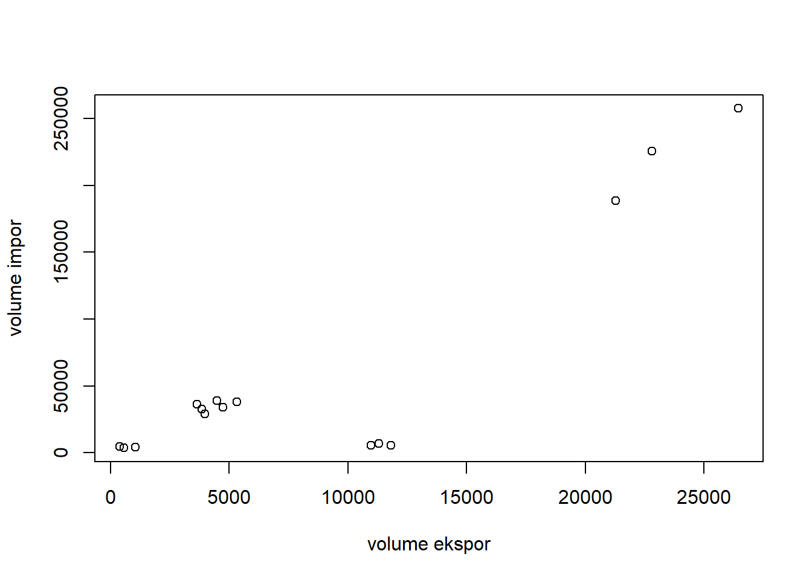

library(tidyverse)
library(readxl)
library(WDI) # tambahkan library lain jika diperlukanAnalisis Perbandingan Data Volume Impor dan Volume Ekpor Indonesia dengan Negara Tujuan Utama tahun 2019-2021
Metode Penelitian Politeknik APP Jakarta

Pendahuluan
0.1 Latar belakang
Setiap negara memiliki kekayaan alam atau sumber daya alam yang berbeda-beda satu sama lain, oleh karena itu dibutuhkannya komoditi yang tidak tersedia antara negara satu dan negara yang lain. Dengan adanya komiditi tersebut, akan terjadi perdagangan atau pertukaran komoditi antara negara satu dan negara yang lain. Terjadilah kegiatan ekspor dan impor tiap negara. Seperti yang dinyatakan oleh Amir (2001:1)
“Perdagangan internasional ekspor impor adalah kegiatan yang dijalankan eksportir maupun produsen eksportir dalam transaksi jual beli suatu komoditi dengan orang asing, bangsa asing, dan negara asing. Kemudian penjual dan pembeli yang lazim disebut eksportir dan importir melakukan pembayaran dengan valuta asing.”
Indonesia merupakan negara dengan penduduk terbesar di ASEAN. Dan sekaligus sebagai negara dengan pulau paling luas terutama diwilayah ASEAN.
Dengan penduduk kurang lebih 250 juta menjadi potensi sumber daya untuk menggerakan roda perekonomian. Disamping kaya akan sumber daya alam yang mempunyai nilai ekspor bagi negara –negara ASEAN khususnya dan juga menjalin Kerjasama pada nilai impor ke Indonesia.
1 Batasan Masalah
Ekspor merupakan upaya dalam menjalankan penjualan komoditas yang kita miliki kepada bangsa lain atau negara asing sesuai dengan ketentuan pemerintah dengan mengharapkan pembayaran dalam valuta asing.
Berdasarkan hasil estimasi dan penelitian terdahulu, hal ini telah sesuai dengan teori yang menyatakan bahwa jika ekspor meningkat maka jumlah cadangan devisa yang dimiliki akan ikut meningkat sehingga persediaan impor dalam beberapa bulan berikutnya akan tercukupi dan akan memperbesar kemampuan negara tersebut melakukan transaksi ekonomi.
Berkaitan dengan pengaruh ekspor. Impor juga memiliki pengaruh terhadap cadangan devisa. Impor adalah perdagangan dengan cara memasukkan barang dari luar negeri ke dalam wilayah Indonesia. Impor mempunyai sifat yang berlawanan dengan ekspor. Kalau ekspor dapat dikatakan sebagai faktor “injeksi”, maka impor justru merupakan “kebocoran” dalam pendapatan nasional.
Dalam penelitian ini disimpulkan bahwa peran ekspor terhadap pertumbuhan ekonomi Indonesia berpengaruh signifikan yang dikarenakan volume ekspor perdagangan Indonesia dari tahun ketahunnya mengalami peningkatan dikarenakan barang ekspor Indonesia memiliki daya saing yang tinggi dipasar Internasional.
Faktor-faktor yang berpengaruh terhadap perkembangan ekspor indonesia adalah Krisis moneter, lajunya inflasi dan PDB negara-negara mitra dan komoditi ekspor, melemahnya nilai tukar rupiah, tinggi rendahnya variabel nilai ekspor dan impor migas & non migas indonesia, biaya produksi seperti tenaga kerja, modal dan pajak, biaya bahan baku, penggerak kurs, hambatan non tarif seperti lingkugan, kesehatan dan standar keamanan, ketersediaan valuta asing, harga pokok produksi ke negara tujuan.
bahwa dalam suatu data menyatakan bahwa terdapat beberapa penghubung yang dapat memprediksikan mengapa pertumbuhan ekspor dapat mempengaruhi pertumbuhan ekonomi, yaitu:
- Perekonomian terbuka menyebabkan tereksposnya perekonomian kepada persaingan internasional sehingga struktur produksi dalam negeri harus menyesuaikan diri terhadap produksi yang lebih efisien.
- Negara kecil memiliki akses ke pasar internasional sehingga mendapatkan keuntungan dari kenaikan.
- Perluasan sektor ekspor menyebabkan eksternalitas positif terhadap keseluruhan perekonomian.
- Pertumbuhan ekspor dapat meningkatkan devisa negara sehingga keuangan negara meningkat.
Pada sisi ekspor, hasil simulasi menunjukkan bahwa untuk kelompok komoditi Pertanian, ekspor keluar negeri mempengaruhi kesejahteraan masyarakat lebih melalui jalur tenaga kerja. Pada kelompok industri, jalur modal lebih dominan; ditunjukkan dengan besaran pengganda yang lebih besar relatif terhadap jalur tenaga kerja. Dari sisi impor, dampak terhadap tingkat kesejahteraan masyarakat disalurkan melalui dua jalur utama yakni jalur produksi dan jalur penerimaan pajak. Faktor produksi yang terlibat dalam proses ini terdiri dari pekerja dengan pendapatan menengah yang tinggal di perkotaan dan pengusaha berpendapatan menengah baik di pedesaan maupun di perkotaan melakukan analisis beberapa faktor yang mempengaruhi ekspor kerajinan provinsi bali dan peramalannya
Dengan negara tujuan utama ekspor impor Indonesia yaitu China, Amerika Serikat, Jepang, Korea Selatan dan Belanda .
2 Rumusan masalah
Berdasarkan latar belakang tersebut, diketahui bahwa ekspor impor banyakmemberi pengaruh terhadap perekonomian maka dapat diambil permasalahannya sebagai berikut.
1.Bagaimana kegiatan ekspor impor dapat memengaruhi perekonomian Indonesia?
2.Kebijakan apa saja yang diupayakan pemerintah untuk meningkatkan ekspor impor bagi perekonomian di Indonesia?
3 Tujuan dan manfaat Penelitian
Tujuan Penelitian
Adapun makalah ini memiliki tujuan sebagai berikut:
Untuk mengetahui cara kegiatan ekspor impor memengaruhi perekonomian Indonesia.
Untuk mengetahui berbagai macam kebi!akan yang diupayakan pemerintah untukmeningkatkan ekspor impor bagi perekonomian di Indonesia.
Manfaat Penelitian:
Adapun makalah ini memiliki manfaat sebagai berikut:
- Dapat menambah wawasan kepada pembaca atau masyarakat luas tentang pengaruh ekspor impor bagi perekonomian di Indonesia.
- Dapat mengetahui atau lebih mengenal kelebihan dan kekurangan dari pengaruh ekspor impor bagi perekonomian di Indonesia.
Bab II
STUDI PUSTAKA
4 Teori
Ekspor adalah bagian penting dari perdagangan internasional. Impor adalah proses transportasi barang atau komoditas dari suatu negara ke negaralain secara legal, umumnya dalam proses perdagangan. Proses impor umumnya adalahtindakan memasukan barang atau komoditas dari negara lain ke dalam negeri. Impor barangsecara besar umumnya membutuhkan campur tangan dari bea cukai di negara pengirim maupun penerima. Impor adalah bagian penting dari perdagangan internasional.Pengutamaan ekspor bagi Indonesia sudah digalakkan sejak tahun 1983.
Sejak saat itu, ekspor menjadi perhatian dalam memacu pertumbuhan ekonomi seiring dengan berubahnya strategi industrialisasi dari penekanan pada industri substitusi impor ke industri promosi ekspor. konsumen dalam negeri membeli barang impor atau konsumen luar negeri membeli barang domestik, menjadi sesuatu yang sangat lazim. Persaingan sangat tajam antarberbagai produk. Selain harga, kualitas atau mutu barang men!adi faktor penentu dayasaing suatu produk.Secara kumulatif, nilai ekspor Indonesia.
Kerangka Penelitian
Penelitian ini menggunakan metode kuantitatif. Dalam penelitian ini mendeskripsikan kegiatan ekspor impor dan banyaknya volume ekspor impor . Ekspor impor adalah proses transportasi barang atau komoditas dari suatu negara ke negara lain secara legal, umumnya dalam proses perdagangan. Proses ekspor impor terjadi karena ketidaksediaannya barang atau komoditi dalam suatu negara tersebut sehingga terjadi kegiatan ekspor impor.
Metode Penelitian
Data
Pengaruh ekspor impor Indonesia pengaruh untuk masyarakat, memperluas pasar bagi produk Indonesia. Semakin luasnya pasar bagi produk Indonesia, maka kegiatan dalam negeri akan meningkat semakin banyak sehingga banyak pula tenaga kerja yang dibutuhkan. pengaruh untuk negara, dengan semakin banyaknya transaksi kegiatan ekspor impor makaakan menambah devisa dan kekayaan negara akan bertambah
-Data yang didapat merupakan data sekunder yang berupa laporan atau data dari pihak tertentu. Data didapat dari berbagai macam sumber dan berikut data volume ekspor dan impor . Salah satu gambaran data menurut BPS (Badan Pusat Statistik), yaitu:
|
|
|
|
|
|
|
|
|
|
|
|
|
|
|
|
|
|
|---|---|---|---|---|---|---|---|---|---|---|---|---|---|---|---|---|
|
No |
Negara |
Volume Ekspor 2019 (ton) |
Volume Impor 2019 (ton) |
Volume Ekspor 2020 (ton) |
Volume Impor 2020 (ton) |
Volume Ekspor 2021 (ton) |
Volume Impor 2021 (ton) |
|||||||||
|
1. |
China |
225.422 |
22.818 |
188.714 |
21.277 |
257.421 |
26.448 |
|||||||||
|
2. |
Jepang |
39.237 |
4.476 |
36.098 |
3.638 |
34.122 |
4.744 |
|||||||||
|
3. |
Amerika Serikat |
5.475 |
11.826 |
5.633 |
10.965 |
6.801 |
11.312 |
|||||||||
|
4. |
Belanda |
4.711 |
387 |
3.711 |
558 |
4.218 |
1.059 |
|||||||||
|
5. |
Korea Selatan |
38.169 |
5.318 |
32.841 |
3.842 |
28.954 |
3.970 |
|||||||||
*berikut contoh data yang ingin dianalisis menurut BPS
Metode Analisis
Dalam data penelitian ini menggunakan alat bantu Rstudio dengan modul modul dan package yang digunakan sesuai dengan Rscript.
4.1 Package
packages yang digunakan antara lain sebagai berikut:
BAB III
Pembahasan
Kegiatan Ekspor Impor Mempengaruhi Perekonomian di Indonesia
Ekspor adalah proses transportasi barang atau komoditas dari suatu negara ke negara lainsecara legal, umumnya dalam proses perdagangan. Proses ekspor pada umumnya adalahtindakan untuk mengeluarkan barang atau komoditas dari dalam negeri untuk memasukannyake negara lain. Ekspor barang secara besar umumnya membutuhkan campur tangan dari beacukai di negara pengirim maupun penerima. Ekspor adalah bagian penting dari perdagangan internasional.
Impor adalah proses transportasi barang atau komoditas dari suatu negara ke negara lainsecara legal, umumnya dalam proses perdagangan. Proses impor umumnya adalah tindakanmemasukan barang atau komoditas dari negara lain ke dalam negeri. Impor barang secara besar umumnya membutuhkan campur tangan dari bea cukai di negara pengirim maupun penerima. Impor adalah bagian penting dari perdagangan internasional.
Pengutamaan ekspor bagi Indonesia sudah digalakkan sejak tahun 1983. Sejak saat itu,ekspor menjadi perhatian dalam memacu pertumbuhan ekonomi seiring dengan berubahnya strategi industrialisasi dari penekanan pada industri substitusi impor ke industri promosi ekspor. Konsumen dalam negeri membeli barang impor atau konsumen luar negeri membeli barang domestik, menjadi sesuatu yang sangat lazim. Ekspor dan impor memiliki sejumlah tujuan positif bagi perekonomian negara. Tujuan kegiatan ekspor:
- Meningkatkan laba perusahaan melalui perluasan pasar serta untuk memperoleh harga jual yang lebih baik (optimalisasi)
- Membuka pasar baru di luar negeri sebagai perluasan pasar domestik (membuka pasar ekspor)
- Memanfaatkan kelebihan kapasitas terpasang (idle capacity)
- Membiasakan diri bersaing dalam pasar internasional sehingga terlatih dalam persaingan yang ketat dan terhindar dari sebutan jago kandang.
Sementara itu, dikutip dari berbagai sumber, tujuan impor antara lain:
Memenuhi kebutuhan dalam negeri baik berupa bahan baku/penolong, barang modal, dan barang konsumsi.
Memperoleh teknologi modern
Kebutuhan barang dapat terjangkau oleh masyarakat
Mempertahankan stabilitas harga produk dalam negeri. Biasanya kelangkaan suatu barang dalam negeri akan mengerek harga barang tersebut, sehingga membutuhkan impor untuk menstabilkan harga produk tersebut.
Kebijakan Pemerintah Dalam Upaya Meningkatkan Ekspor dan Impor
Kebijakan pemerintah untuk mendorong ekspor adalah kebijakan yang sudah cukup lama dibuat, untuk mendukung daya saing. Melansir dari berbagai sumber, berikut beberapa kebijakan pemerintah untuk mendorong ekspor.
Memberikan kemudahan kepada produsen barang ekspor
Pertama, kebijakan pemerintah untuk mendorong ekspor adalah memberikan kemudahan, dalam mengurus segala perizinan, hingga memberikan fasilitas kepada produsen ekspor.Adapun pemerintah memberikan fasilitas yakni berupa pemberian bantuan teknologi, pelatihan inovasi produk, bantuan kredit dengan bunga yang rendah.
Dengan begitu, produsen ekspor bisa lebih semangat untuk memproduksi lebih banyak produk. Tidak hanya itu, harga produksi barang yang murah, juga bisa menurunkan harga jual, sehingga hal tersebut juga bisa bantu meningkatkan daya saing perusahaan.
Menjadi kestabilan nilai tukar rupiah
Kebijakan pemerintah untuk mendorong ekspor adalah dengan menstabilkan nilai tukar rupiah, sehingga membuat produsen semangat untuk ekspor. Tanpa kestabilan, para eksportir mungkin akan keberatan untuk menjual barang produksinya ke luar negeri.
Adanya perjanjian dagang internasional
Agar tidak hanya sekadar bantuan, kebijakan pemerintah untuk mendorong ekspor adalah dengan membuat perjanjian dagang internasional. Di mana kebijakan ini sudah banyak juga dilakukan oleh beberapa negara.
Peningkatan promosi produk dalam negeri
Pasar internasional tidak kecil dan sedikit, sehingga peran pemerintah untuk melakukan promosi produk juga sangat penting. Sehingga, pemerintah membuat kebijakan dengan mengenalkan produk dalam negeri di pasar internasional seperti melakukan pameran dagang, festival olahraga, seni, musik, dan kegiatan lainnya, sebagai alat promosi.
Subsidi Ekspor
Berikutnya, kebijakan pemerintah untuk mendorong ekspor adalah dengan memberikan subsidi ekspor. Kebijakan ini dilakukan dengan cara memberikan subsidi dalam bentuk keringanan pajak, tarif angkutan umum murah, kemudahan pengurusan ekspor, hingga kemudahan mendapatkan kredit dengan bunga yang cukup rendah.
Premi Ekspor
Selain subsidi, kebijakan pemerintah untuk mendorong ekspor adalah premi ekspor. Apa itu premi ekspor? Premi atau insentif ekspor ini ternyata juga bisa mendorong kegiatan ekspor di Indonesia, bagi para produsen dan eksportir.
Analisis Masalah
berikut adalah hasil data regresi menggunakan Rstudio menurut dalam volume ekspor impor tahun 2019-2021:
setwd('D:/Metodologi Penelitian/data excel') # AWAS SETWD-NYA PERBAIKI DULU
library('readxl')
library('tidyverse')
dat<-read_excel('Latihan1.xlsx')
reg1<-lm(Y~X,data=dat)
summary(reg1)
Call:
lm(formula = Y ~ X, data = dat)
Residuals:
Min 1Q Median 3Q Max
-3626 -2753 -1803 1039 7747
Coefficients:
Estimate Std. Error t value Pr(>|t|)
(Intercept) 3.608e+03 1.331e+03 2.710 0.0179 *
X 8.614e-02 1.288e-02 6.687 1.5e-05 ***
---
Signif. codes: 0 '***' 0.001 '**' 0.01 '*' 0.05 '.' 0.1 ' ' 1
Residual standard error: 4171 on 13 degrees of freedom
Multiple R-squared: 0.7748, Adjusted R-squared: 0.7574
F-statistic: 44.72 on 1 and 13 DF, p-value: 1.5e-05plot(dat$Y,dat$X,xlab="volume ekspor",ylab="volume impor")
BAB IV
Kesimpulan
Banyak manfaat yang diperoleh Indonesia dari kegiatan ekspor impor dimana masyarakat dan perekonomian Segara menjadi lebih stabil banyak cara untuk melakukan kegiatan eskpor impor dengan segara lain yang membuat produsen tidak pusing memikirkan bagaimana mengekspor barang atau mengimpor barang dari dan keluar negeri. Banyak faktor pendorong untuk melakukan kegiatan ekspor impor sehingga kegiatan ini akan terus berJalan dikemudian hari.
Performa surplus yang impresif tersebut ditopang oleh peningkatan ekspor Indonesia yang terakselerasi pada Agustus 2021 dengan mencapai US$21,42 miliar, meningkat double digit sebesar 20,95% (mtm) atau 64,10% (yoy). Nilai ekspor tersebut sekaligus tercatat sebagai rekor tertinggi baru bagi ekspor Indonesia, menembus rekor tertinggi sepanjang masa yang pernah terjadi sebelumnya pada Agustus 2011 yang sebesar US$18,60 miliar.
Peningkatan ekspor Indonesia juga mengkonfirmasi perbaikan Purchasing Managers’ Index (PMI) Manufaktur Indonesia Agustus 2021 yang meningkat menjadi 43,7 dari sebelumnya berada di level 40,1 pada Juli 2021. Level PMI Indonesia juga lebih baik dibandingkan dengan beberapa negara di ASEAN, seperti Myanmar (36,5), Vietnam (40,2), dan Malaysia (43,4).
Peningkatan ekspor terbesar Indonesia pada Agustus 2021 terjadi pada komoditi lemak dan minyak hewan/nabati (HS 15) sebesar US$1.544,8 juta, bahan bakar mineral (HS 27) sebesar US$573,2 juta, dan bijih logam (HS 26) sebesar USD213,1 juta. Sementara itu, negara tujuan ekspor nonmigas yang mengalami peningkatan terbesar dibanding bulan sebelumnya diantaranya Tiongkok (US$1.212,2 juta), India (US$759,1 juta), dan Jepang (US$453,2 juta).
Saran
Apabila Indonesia ingin mendapat sisi positif dalam perdagangan Indonesia makaIndonesia harus mampu melakukan kegiatan ekspor yang lebih banyak dibandingkan dengan kegiatan impor. Banyaknya masalah yang ter!adi dengan adanya kegiatan ekspor impor ini sehingga pemerintah dituntut untuk melakukan kebi!akan yang benar dan tepat sasaran. Seharusya pemerintah membuat keringan peraturan bagi barang A barang ekspor dan impor agar kegiatan tersebut lancar.
5 Referensi
Bps.go.id/statictable/2014/09/08/1035/volume-impor-menurut-negara-asal-utama-berat-bersih-ribu-ton-2000-2021.html
Bps.go.id/statictable/2014/09/08/1009/volume-ekspor-menurut-negara-tujuan-utama-berat-bersih-ribu-ton-2000-2021.html
Ewaldo, E. (2015). Analisis ekspor minyak kelapa sawit di Indonesia. e-Journal Perdagangan Industri dan Moneter, 3(1), 10-15.
Putri, R. D. S., & Siladjaja, M. (2021). Pengaruh Perdagangan Internasional (Ekspor-Impor) dan Investasi Terhadap Pertumbuhan Ekonomi di Indonesia. Journal of Public Auditing and Financial Management, 1(1), 13-26.
Supardi, E. (2021). Ekspor Impor Perdagangan Internasional (Ekspor-Impor), Masalah-Masalah Di Dalam Kegiatan (Ekspor-Impor), Para Pihak Yang Terlibat Dalam Kegiatan Ekspor-Impor, Metode Pembayaran Dalam Perdagangan Internasional. Deepublish